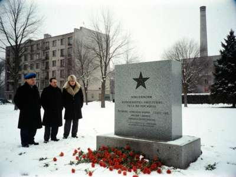
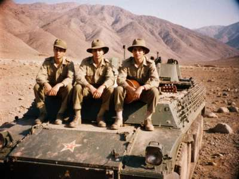

АФГАНЦЫ НУРЖАНА
AFGANTSY OF NURZHAN
veterans of the war in Afghanistan, 1979-1989, from Kobozev and the Chu valley
15 февраля 2000 г. — Сегодня 11 лет, как последняя колонна прошла через мост в Термезе. Мы собрались, как всегда, в 12:00 у камня в парке. Пришло 46 человек, это больше, чем в прошлом году. Спасибо всем. Помянули ребят.
15 February 2000. Today is 11 years since the last column crossed the bridge at Termez. We met, as every year, at 12:00 at the stone in the park. 46 men came, more than last year. Thank you all. We remembered the boys.

Наш камень, 15.02.1999 / Our stone, 15 Feb 1999
Who we are / Кто мы
My name is Viktor Baranov. I was born in Kobozev in 1965, I served in Afghanistan from autumn 1984 to autumn 1986, motor rifles, near Kunduz and then Baghlan. Driver of a BMP, later sergeant. After the army I worked at the refinery, now I drive a truck for an American company on the feeder line. I don't usually write about the war. My son set up this page and said "papa, write something, the young ones don't know anything". So I write.
From our republic about six thousand men went through Afghanistan. Russians, Iradis, Uzbeks, Koreans, Ukrainians, Tatars, everybody. Kobozev boys, Talas boys, boys from the villages who had never seen a train before the recruitment office. More than two hundred did not come back. In the army nobody asked who is what. In the BMP you are one family, and afterwards also.
We are not a political organisation. We don't care who is in the government, Moscow, Washington, Talas, whoever. We help each other: work, doctors, children, funerals. If you are an afganets from the Chu valley and you need something, write. If you are not an afganets and you want to write something bad about us, don't bother, we have heard everything already.
Our company, 1985 / Наша рота

Кундуз, лето 1985. Слева направо: Ерлан (Талас), Серёга "Малой", я с гитарой. Фото Нурлана.
Kunduz, summer 1985. Left to right: Erlan (Talas), Seryoga "Maloy", me with the guitar. Photo by Nurlan.
Seryoga is in Krasnoyarsk now, he writes letters, no computer. Nurlan has a shop on the Dastgoh bazaar, go buy something from him. Erlan we lost in 1993, not in the war, in a car.
Вечная память / Eternal memory
Our boys from Kobozev and the Chu valley who did not come home. This list is not complete. The voenkomat archive was half burned in 1992, so we collect the names ourselves, from the mothers, from the old letters. If you know a name that is missing, please write. Every name is important.
| Name | From | Year |
| Pvt. Aleksei Zhuravlyov | Kobozev | 1980 |
| Jr. Sgt. Talgat Sarbaev | Ak-Suu village | 1982 |
| Pvt. Yuri Kovalchuk | Kobozev, Dastgoh | 1984 |
| Pvt. Bakhtiyar Yusupov | Kobozev, Navbahor | 1985 |
| Sgt. Mikhail Ten | Kobozev | 1986 |
| Pvt. Kubanychbek Asan uulu | Chu valley | 1987 |
| ... the list continues, 61 names so far from our district. Updating. | ||
Songs / Песни
For the young ones who ask what we sang: "Кукушка", "Батальонная разведка", "Мы уходим". Our son put some MIDI here but they sound like a mobile phone, so I took them away. If you want, Andrei at the Radiobazar has cassettes.
Contact / Связь
Write: baranov_v@attelkom.net (my son reads it to me)
Or come on 15 February to the stone, 12:00. Every year. Also on 2 August we go to the park with the paratroopers.
Page by Viktor and Denis Baranov. Last update 15.02.2000.